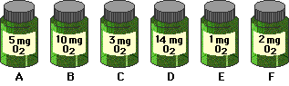

A biology student inadvertently removed all the screens and labels from the water-sampling bottles before he measured the amount of dissolved oxygen. When he tested the unidentified bottles, he obtained the results shown below.

The initial oxygen reading for this water was 4 mg O2/l. Based on the results predicted by the hypothesis that light increases productivity, enter the letter of the bottle that corresponds to each light percentage. Then complete the rest of the table and, using the graph below as a model, graph the gross and net productivity for these data. Print the completed data table and take it with you to class on the day you will analyze the 24-hour results of your own samples.
If you are having trouble with these calculations, take a side trip take a side trip to learn about gross productivity, net productivity or to get additional help.
Graphing Hints
- Be sure to label both x- and y-axes on the graph. Place the independent variable on the x-axis and the dependent variable on the y-axis. (If you're not certain what a dependent variable or an independent variable is, check the glossary.)
- Be sure to mark units correctly on the graph — the interval between 2% light and 10% light is NOT the same as the interval between 10% and 25%!